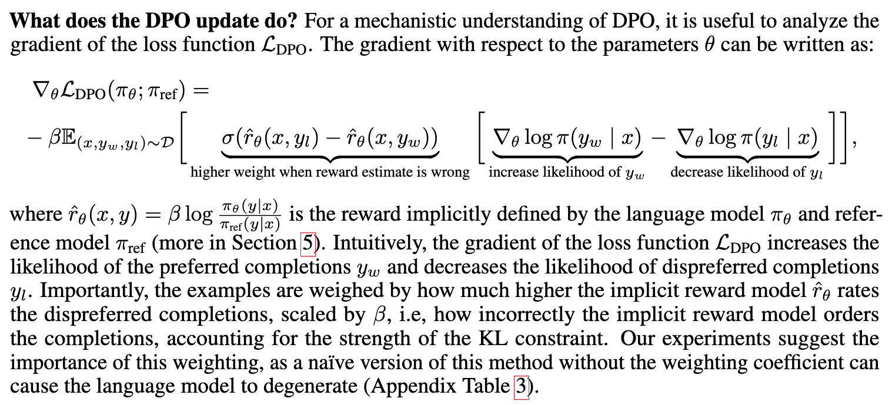

Paper Math: DPO (Direct Preference Optimization)
Background
In this blog post I’ll walk through some of the math involved in the research paper Direct Preference Optimization: Your Language Model is Secretly a Reward Model.
The abstract:
While large-scale unsupervised language models (LMs) learn broad world knowledge and some reasoning skills, achieving precise control of their behavior is difficult due to the completely unsupervised nature of their training. Existing methods for gaining such steerability collect human labels of the relative quality of model generations and fine-tune the unsupervised LM to align with these preferences, often with reinforcement learning from human feedback (RLHF). However, RLHF is a complex and often unstable procedure, first fitting a reward model that reflects the human preferences, and then fine-tuning the large unsupervised LM using reinforcement learning to maximize this estimated reward without drifting too far from the original model. In this paper we introduce a new parameterization of the reward model in RLHF that enables extraction of the corresponding optimal policy in closed form, allowing us to solve the standard RLHF problem with only a simple classification loss. The resulting algorithm, which we call Direct Preference Optimization (DPO), is stable, performant, and computationally lightweight, eliminating the need for sampling from the LM during fine-tuning or performing significant hyperparameter tuning. Our experiments show that DPO can fine-tune LMs to align with human preferences as well as or better than existing methods. Notably, fine-tuning with DPO exceeds PPO-based RLHF in ability to control sentiment of generations, and matches or improves response quality in summarization and single-turn dialogue while being substantially simpler to implement and train.
DPO involves preference data, a reference model and the parameterized model (i.e. the model being trained).
I found this section of the paper provide the most intuition about why DPO works:

As the model gets more likely to pick the preferred response, the gradient increases. Conversely, as the implicit reward (log probability ratio of parameterized model and reference model) for rejected responses increases, the gradient increases. I think of these two terms contrasting each other, keeping the gradient from vanishing or exploding.
In the next few sections of this blog post, I’ll walk through parts of the paper where I found that math either challenging (and used Claude or ChatGPT to help me figure it out) and/or particulary helpful for my understanding of the concepts. In the final section, I do my best to connect the code implementation of DPO loss with the math formulas provided in the paper. Overall I found this process very rewarding and built my confidence to take on understanding the mathy parts of the paper moving forward.
Section 3: Preliminaries
Reward Modelling Phase
Bradley-Terry model stipulates that the human preference distribution \(p^*\) can be written as:
Equation (1): \[ p^*(y_1 \succ y_2|x) = \frac{\exp(r^*(x, y_1))}{\exp(r^*(x, y_1)) + \exp(r^*(x, y_2))}\]
Where \(r^*(y, x)\) is a latent reward model we don’t have access to.
(I don’t know if it’s mathematically correct to say this but \(p^*\) function looks like softmax).
\(\succ\) = “succeeds” symbol. A couple of definitions I found online, seems pretty straightforward:
The term successor and predecessor in Math means that they come directly after or before the particular number respectively. Both successor and predecessor basically applied only to the whole numbers. The successor is termed as after numbers whereas the predecessor is termed as before numbers.
Successor in Math refers to the after the term of a particular term while the predecessor in Math refers to them before the term of a particular term. We can find the successor of a whole number by adding one to the particularly given number whereas to find the predecessor of a whole number we will subtract one from the particularly given number. In this article, we will study what are successor and predecessor, successor meaning, predecessor meaning, how to find the successor of a given number, how to find the predecessor of a given number, etc. Source.
The succeeds operator (≻) is a generalization of idea behind some numbers being bigger than others.
The succeeds operator (≻) is like 10>4 , except that it applies to objects other than numbers. (Source)
A preference relation expresses the consumer’s feelings between pairs of objects in X . We denote the preference relation by \(\succeq\) and imagine that for every pair x and y from X , the consumer is willing to say that either x \(\succeq\) y , meaning x is at least as good as y, or not. Source
Static dataset of comparisons sampled from \(p^*\):
\[\mathcal{D}\{x^{(i)}, y_w^{(i)}, y_l^{(i)}\}^N\]
Assuming we have access to \(\mathcal{D}\) we can parameterize a reward model \(r_{\phi}(x,y)\) and estimate parameters via maximum likelihood. Framed as a binary classification problem we have the negative log-likelihood loss:
Equation (2):
\[\mathcal{L}_R(r_{\phi}, \mathcal{D}) = -\mathbb{E}_{(x, y_w, y_l)\sim\mathcal{D}}\big[\log\sigma(r_{\phi}(x, y_w) - r_{\phi}(x, y_l)\big]\]
In the loss function above, as \(r_{\phi}(x, y_w) - r_{\phi}(x, y_l)\) increases (the model assigns higher reward to the preferred response), sigmoid (\(\sigma\), blue function below) goes to 1 and \(-\log\sigma\) (red function below) goes to 0.
The network \(r_{\phi}\) is often initialized from the SFT model \(\pi^{SFT}(y|x)\) with the addition of a linear layer on top of the final transformer layer that produces a single scalar prediction for the reward value.
RL Fine-Tuning Phase
Optimization problem formulated as:
Equation (3):
\[\max_{\pi_{\theta}}\mathbb{E}_{x\sim\mathcal{D}, y\sim\pi_{\theta}(y|x)}[r_\phi(x,y)]-\beta\mathbb{D}_{KL}[\pi_\theta(y|x) \;||\; \pi_{ref}(y|x)]\]
\(\beta\) is a parameter controlling the deviation from the base reference policy \(\pi_{ref}\) (the initial SFT model \(\pi^{SFT}\)).
The language model policy \(\pi_\theta\) is also initialized to \(\pi^{SFT}\).
This objective is not differentiable because language generation is discrete, so the standard approach is to construct the reward function as:
\[ r(x,y) = r_\phi(x,y)-\beta(\log\pi_\theta(y|x) - \log\pi_{ref}(y|x)\]
And maximize it using PPO.
Appendix A.1: Deriving the Optimum of the KL-Constrained Reward Maximization Objective
Start with a modified version of Equation (3), where now we have any reward function \(r(x,y)\) and a general non-parametric policy class \(\pi\):
Step 1: \[\max_{\pi}\mathbb{E}_{x\sim\mathcal{D}, y\sim\pi}[r(x,y)]-\beta\mathbb{D}_{KL}[\pi(y|x) \;||\; \pi_{ref}(y|x)]\]
Step 2:
\[\max_{\pi}\mathbb{E}_{x\sim\mathcal{D}}\mathbb{E}_{y\sim\pi(y|x)}\big[r(x,y)]-\beta\log\frac{\pi(y|x)}{\pi_{ref}(y|x)}\big]\]
ChatGPT explanation on how to go from Step 1 to Step 2:
Prompt:
Explain in detail how you go from:
Step 1: \[\max_{\pi}\mathbb{E}_{x\sim\mathcal{D}, y\sim\pi}[r(x,y)]-\beta\mathbb{D}_{KL}[\pi(y|x) \;||\; \pi_{ref}(y|x)]\]
to Step 2: \[\max_{\pi}\mathbb{E}_{x\sim\mathcal{D}}\mathbb{E}_{y\sim\pi(y|x)}\big[r(x,y)]-\beta\log\frac{\pi(y|x)}{\pi_{ref}(y|x)}\big]\]
Response:
To go from Step 1 to Step 2, we will first break down the components of the expectation terms and then manipulate them accordingly.
In step 1:
\[\max_{\pi}\mathbb{E}_{x\sim\mathcal{D}, y\sim\pi}[r(x,y)]-\beta\mathbb{D}_{KL}[\pi(y|x) \;||\; \pi_{ref}(y|x)]\]
The first term represents the expected reward under the joint distribution of \(x\) and \(y\) drawn from the distribution \(\mathcal{D}\) and \(\pi\) respectively. The second term is the Kullback-Leibler (KL) divergence between the conditional distribution \(\pi(y|x)\) and a reference conditional distribution \(\pi_{ref}(y|x)\).
Now, to transform it into Step 2:
\[\max_{\pi}\mathbb{E}_{x\sim\mathcal{D}}\mathbb{E}_{y\sim\pi(y|x)}\big[r(x,y)]-\beta\log\frac{\pi(y|x)}{\pi_{ref}(y|x)}\big]\]
We will separate the expectation over \(x\) and \(y\), and then express the KL divergence term differently.
- Separation of expectations: We start by separating the joint expectation into two nested expectations:
\[\max_{\pi}\mathbb{E}_{x\sim\mathcal{D}}\left[ \mathbb{E}_{y\sim\pi(y|x)}\left[r(x,y)\right]\right] - \beta\mathbb{D}_{KL}[\pi(y|x) \;||\; \pi_{ref}(y|x)]\]
- Transforming the KL divergence term:
Next, we express the KL divergence term differently using its definition:
\[\mathbb{D}_{KL}[\pi(y|x) \;||\; \pi_{ref}(y|x)] = \mathbb{E}_{y\sim\pi(y|x)}\left[\log\frac{\pi(y|x)}{\pi_{ref}(y|x)}\right]\]
Here, we are effectively taking the expectation over \(y\) for the logarithm of the ratio of the two distributions.
After these transformations, we have successfully rewritten Step 1 into the desired form of Step 2. The key steps involve separating the expectations over \(x\) and \(y\), and expressing the KL divergence term using its definition.
Based on what ChatGPT provided, I’m adding one more detail that it didn’t write out, which is plugging in the KL divergence term using its definition into the main equation before simplifying it:
\[\max_{\pi}\mathbb{E}_{x\sim\mathcal{D}}\left[ \mathbb{E}_{y\sim\pi(y|x)}\left[r(x,y)\right]\right] - \beta\mathbb{E}_{y\sim\pi(y|x)}\left[\log\frac{\pi(y|x)}{\pi_{ref}(y|x)}\right]\]
I think is then simplified to:
\[\max_{\pi}\mathbb{E}_{x\sim\mathcal{D}}\mathbb{E}_{y\sim\pi(y|x)}\big[r(x,y) - \beta\log\frac{\pi(y|x)}{\pi_{ref}(y|x)}\big]\]
Next in the paper, is Step 3:
\[\min_{\pi}\mathbb{E}_{x\sim\mathcal{D}}\mathbb{E}_{y\sim\pi(y|x)}\big[\log\frac{\pi(y|x)}{\pi_{ref}(y|x)} - \frac{1}{\beta}r(x,y)\big]\]
(Summarized) ChatGPT explanation on how to go from Step 2 to Step 3:
Prompt:
Explain in detail how you go from:
Step 2: \[\max_{\pi}\mathbb{E}_{x\sim\mathcal{D}}\mathbb{E}_{y\sim\pi(y|x)}\big[r(x,y)-\beta\log\frac{\pi(y|x)}{\pi_{ref}(y|x)}\big]\]
to Step 3:
\[\min_{\pi}\mathbb{E}_{x\sim\mathcal{D}}\mathbb{E}_{y\sim\pi(y|x)}\big[\log\frac{\pi(y|x)}{\pi_{ref}(y|x)} - \frac{1}{\beta}r(x,y)\big]\]
Response:
To go from Step 2 to Step 3, we need to transform the maximization problem into a minimization problem, and rearrange the terms accordingly. Let’s break down the steps:
- Negate the Objective Function:
To transform a maximization problem into a minimization problem, we can simply negate the objective function. Since maximizing \(\mathbb{E}[f(x)]\) is equivalent to minimizing \(−\mathbb{E}[f(x)]\), we negate the entire objective function:
\[-\big(r(x,y)-\beta\log\frac{\pi(y|x)}{\pi_{ref}(y|x)}\big) = \beta\log\frac{\pi(y|x)}{\pi_{ref}(y|x)} - r(x,y) \]
- Reorder the terms
Next, we rearrange the terms in the objective function to match the desired form.
\[\log\frac{\pi(y|x)}{\pi_{ref}(y|x)} - \frac{1}{\beta}r(x,y)\]
By dividing the second term by \(\beta\), we transform the maximization problem into a minimization problem with a positive weight on the reward term.
I think what is implied in the above explanation is that you are allowed to divide the optimization objective by a constant (in this case, \(\beta\)).
Next in the paper is Step 4:
\[\min_{\pi}\mathbb{E}_{x\sim\mathcal{D}}\mathbb{E}_{y\sim\pi(y|x)}\big[\log\frac{\pi(y|x)}{\frac{1}{Z(x)}\pi_{ref}(y|x)\exp(\frac{1}{\beta}r(x,y))} - \log Z(x)\big]\]
Where:
\[Z(x) = \sum_{y}\pi_{ref}(y|x)\exp(\frac{1}{\beta}r(x,y))\]
is the “partition function”.
ChatGPT didn’t have a very helpful explanation (even after multiple prompts) except for the following explanation of why \(Z(x)\) is needed:
We introduce a normalization constant \(Z(x)\) inside the logarithm. This constant ensures that the expression inside the logarithm integrates to 1, effectively making it a probability distribution.
I’ll try to connect the dots myself.
This:
\[\log\frac{\pi(y|x)}{\pi_{ref}(y|x)} - \frac{1}{\beta}r(x,y)\]
Should be shown to be equal to this:
\[\log\frac{\pi(y|x)}{\frac{1}{Z(x)}\pi_{ref}(y|x)\exp(\frac{1}{\beta}r(x,y))} - \log Z(x)\]
I’ll start with the “normalized” version:
\[\log\frac{\pi(y|x)}{\frac{1}{Z(x)}\pi_{ref}(y|x)\exp(\frac{1}{\beta}r(x,y))} - \log Z(x)\]
rewrite the denominator:
\[\log\frac{\pi(y|x)}{\frac{\pi_{ref}(y|x)\exp(\frac{1}{\beta}r(x,y))}{Z(x)}} - \log Z(x)\]
Apply the property of logarithm \(\log(\frac{a}{b}) = \log(a) - \log(b)\) to the first term:
\[\log\pi(y|x) - \log\frac{\pi_{ref}(y|x)\exp(\frac{1}{\beta}r(x,y))}{Z(x)} - \log Z(x)\]
Apply that property to the second term (putting it inside brackets to maintain the minus sign before it):
\[\log\pi(y|x) - \big[\log\big( \pi_{ref}(y|x)\exp(\frac{1}{\beta}r(x,y))\big) - \log Z(x) \big] - \log Z(x)\]
Minus a negative becomes a plus:
\[\log\pi(y|x) - \log \big(\pi_{ref}(y|x)\exp(\frac{1}{\beta}r(x,y))\big) + \log Z(x) - \log Z(x)\]
The \(\log Z(x)\)’s cancel out:
\[\log\pi(y|x) - \log \big(\pi_{ref}(y|x)\exp(\frac{1}{\beta}r(x,y))\big)\]
Applying the property of logarithms \(\log(ab) = \log(a) + \log(b)\):
\[\log\pi(y|x) - \big[\log \pi_{ref}(y|x) + \log\exp(\frac{1}{\beta}r(x,y))\big]\]
Minus a positive stays a minus:
\[\log\pi(y|x) - \log \pi_{ref}(y|x) - \log\exp(\frac{1}{\beta}r(x,y))\]
Given that \(\log(\exp(x)) = x\):
\[\log\pi(y|x) - \log \pi_{ref}(y|x) - \frac{1}{\beta}r(x,y)\]
Applying the property that \(\log(a) - \log(b) = \log(\frac{a}{b})\):
\[\log\frac{\pi(y|x)}{\pi_{ref}(y|x)} - \frac{1}{\beta}r(x,y) \]
Which is the original expression.
Next in the paper they define a “valid probability distribution” as:
\[\pi^*(y|x) = \frac{1}{Z(x)}\pi_{ref}(y|x)\exp\big(\frac{1}{\beta}r(x,y)\big)\]
They say it’s valid because \(\pi^*(y|x) \ge 0\) for all \(y\) and \(\sum_{y}\pi^*(y|x) = 1\). They don’t provide much detail. I’ll rewrite that expression with the full form of \(Z(x)\):
\[\pi^*(y|x) = \frac{\pi_{ref}(y|x)\exp\big(\frac{1}{\beta}r(x,y)\big)}{Z(x)}\]
\[\pi^*(y|x) = \frac{\pi_{ref}(y|x)\exp\big(\frac{1}{\beta}r(x,y)\big)}{\sum_{y}\pi_{ref}(y|x)\exp(\frac{1}{\beta}r(x,y))}\]
That looks like the softmax function, which is a valid probability distribution so I’m going with that understanding for now.
Next in the paper they rewrite the optimization objective with this \(\pi^*\) expression:
\[\min_{\pi}\mathbb{E}_{x\sim\mathcal{D}}\big[\mathbb{E}_{y\sim\pi(y|x)} \big[\log\frac{\pi(y|x)}{\pi^*(y|x)}\big] -\log Z(x) \big]\]
the first term inside the first set of brackets is KL-divergence:
\[\min_{\pi}\mathbb{E}_{x\sim\mathcal{D}}\big[\mathbb{D}_{KL} \big(\pi(y|x) \; || \; \pi^*(y|x)\big) -\log Z(x) \big]\]
\(Z(x)\) does not depend on \(y\) so minimizing the objective is dependent only on minimizing the KL-divergence term, which is minimized to 0 when the two probability distributions are identical:
\[\pi(y|x) = \pi^*(y|x) = \frac{1}{Z(x)}\pi_{ref}(y|x)\exp\big(\frac{1}{\beta}r(x,y)\big)\]
I’ll rewrite that with the full form of \(Z(x)\):
\[\pi(y|x) = \pi^*(y|x) = \frac{\pi_{ref}(y|x)\exp\big(\frac{1}{\beta}r(x,y)\big)}{\sum_{y}\pi_{ref}(y|x)\exp(\frac{1}{\beta}r(x,y))}\]
Appendix A.2 Deriving the DPO Objective Under the Bradley-Terry Model
Bradley-Terry preference model:
\[p^*(y_1 \gt y_2) = \frac{\exp(r^*(x,y_1))}{\exp(r^*(x,y_1)) + \exp(r^*(x,y_2))}\]
The unavailable ground-truth reward expressed through its optimal policy:
\[r^*(x,y)=\beta\log\frac{\pi^*(y|x)}{\pi_{ref}(y|x)} + \beta\log Z(x)\]
In section 4 they say that they derive this expression of reward from the following:
\[\pi_r(y|x) = \frac{1}{Z(x)}\pi_{ref}(y|x)\exp\big(\frac{1}{\beta}r(x,y)\big)\]
By taking the logarithm of each side:
\[\log\pi_r(y|x) = \log\big(\frac{1}{Z(x)}\pi_{ref}(y|x)\exp\big(\frac{1}{\beta}r(x,y)\big)\big)\]
Applying the property \(\log(ab) = \log(a) + \log(b)\) to the right hand side:
\[\log\pi_r(y|x) = \log\big(\frac{1}{Z(x)}\pi_{ref}(y|x)\big) + \log\big(\exp\big(\frac{1}{\beta}r(x,y)\big)\big)\]
Applying the property \(\log(\exp(x)) = x\) to the second term on the right hand side:
\[\log\pi_r(y|x) = \log\big(\frac{1}{Z(x)}\pi_{ref}(y|x)\big) + \frac{1}{\beta}r(x,y)\]
Applying the property \(\log(\frac{a}{b}) = \log(a) - \log(b)\) to the first term on the right hand side:
\[\log\pi_r(y|x) = \log\pi_{ref}(y|x) - \log Z(x) + \frac{1}{\beta}r(x,y)\]
Isolating \(r(x,y)\):
\[\log\pi_r(y|x) - \log\pi_{ref}(y|x) + \log Z(x) = \frac{1}{\beta}r(x,y)\]
Rewriting the left hand side using logarithm property:
\[\log\frac{\pi_r(y|x)}{\pi_{ref}(y|x)} + \log Z(x) = \frac{1}{\beta}r(x,y)\]
Multiplying both sides by \(\beta\):
\[\beta\log\frac{\pi_r(y|x)}{\pi_{ref}(y|x)} + \beta\log Z(x) = r(x,y)\]
Which is the final result.
In the paper they then substitute that for \(r^*(x,y)\) in the Bradley-Terry preference model expression:
\[p^*(y_1 \gt y_2|x) = \frac{\exp\big(\beta\log\frac{\pi^*(y_1|x)}{\pi_{ref}(y_1|x)} + \beta\log Z(x)\big)}{\exp\big(\beta\log\frac{\pi^*(y_1|x)}{\pi_{ref}(y_1|x)} + \beta\log Z(x)\big) + \exp\big(\beta\log\frac{\pi^*(y_2|x)}{\pi_{ref}(y_2|x)} + \beta\log Z(x)\big)}\]
They arrive at the following form without intermediate steps:
\[\frac{1}{1 + \exp\big(\beta\log\frac{\pi^*(y_2|x)}{\pi_{ref}(y_2|x)} - \beta\log\frac{\pi^*(y_1|x)}{\pi_{ref}(y_1|x)}\big)}\]
Using ChatGPT (its response was not fully clear so I’m writing it out here with my two cents):
- Distribute the exponentials in the numerator and denominator using the property \(\exp(a + b) = \exp(a)\exp(b)\)
\[\frac{\exp\big(\beta\log\frac{\pi^*(y_1|x)}{\pi_{ref}(y_1|x)} \big)\exp \big(\beta\log Z(x)\big)}{\exp\big(\beta\log\frac{\pi^*(y_1|x)}{\pi_{ref}(y_1|x)}\big)\exp\big(\beta\log Z(x)\big) + \exp\big(\beta\log\frac{\pi^*(y_2|x)}{\pi_{ref}(y_2|x)}\big)\big(\beta\log Z(x)\big)}\]
- Cancel out the common term \(\exp(\beta\log Z(x))\)
\[\frac{\exp\big(\beta\log\frac{\pi^*(y_1|x)}{\pi_{ref}(y_1|x)} \big)}{\exp\big(\beta\log\frac{\pi^*(y_1|x)}{\pi_{ref}(y_1|x)}\big) + \exp\big(\beta\log\frac{\pi^*(y_2|x)}{\pi_{ref}(y_2|x)}\big)}\]
This resembles the softmax function.
- Divide numerator and denominator by \(\exp\big(\beta\log\frac{\pi^*(y_1|x)}{\pi_{ref}(y_1|x)}\big)\)
\[\frac{\exp\big(\beta\log\frac{\pi^*(y_1|x)}{\pi_{ref}(y_1|x)} \big) \div \exp\big(\beta\log\frac{\pi^*(y_1|x)}{\pi_{ref}(y_1|x)}\big)}{\exp\big(\beta\log\frac{\pi^*(y_1|x)}{\pi_{ref}(y_1|x)}\big) \div \exp\big(\beta\log\frac{\pi^*(y_1|x)}{\pi_{ref}(y_1|x)}\big) + \exp\big(\beta\log\frac{\pi^*(y_2|x)}{\pi_{ref}(y_2|x)}\big) \div \exp\big(\beta\log\frac{\pi^*(y_1|x)}{\pi_{ref}(y_1|x)}\big)}\]
- Numerator and first term in denominator cancel out to equal 1
\[\frac{1}{1+ \exp\big(\beta\log\frac{\pi^*(y_2|x)}{\pi_{ref}(y_2|x)}\big) \div \exp\big(\beta\log\frac{\pi^*(y_1|x)}{\pi_{ref}(y_1|x)}\big)}\]
- Use the property \(\exp(a) \div \exp(b) = \exp(a - b)\)
\[\frac{1}{1+ \exp\big(\beta\log\frac{\pi^*(y_2|x)}{\pi_{ref}(y_2|x)} - \beta\log\frac{\pi^*(y_1|x)}{\pi_{ref}(y_1|x)}\big)}\]
This is in the form of sigmoid: \(\sigma(a) = \frac{1}{1 + e^{-a}}\)
Where \(a\) in this case is the full term inside \(\exp()\)
- Rewrite it as sigmoid function
\[\frac{1}{1+ \exp\big(\beta\log\frac{\pi^*(y_2|x)}{\pi_{ref}(y_2|x)} - \beta\log\frac{\pi^*(y_1|x)}{\pi_{ref}(y_1|x)}\big)}=\sigma \big( \beta\log\frac{\pi^*(y_2|x)}{\pi_{ref}(y_2|x)} - \beta\log\frac{\pi^*(y_1|x)}{\pi_{ref}(y_1|x)}\big)\]
This is the per-instance loss in the following loss function (Equation 7 in the paper):
\[\mathcal{L}_{DPO}(\pi_\theta; \pi_{ref}) = -\mathbb{E}_{(x, y_w, y_l)\sim\mathcal{D}}\big[\log\sigma\big(\beta\log\frac{\pi_\theta(y_w|x)}{\pi_{ref}(y_w|x)} - \beta\log\frac{\pi_\theta(y_l|x)}{\pi_{ref}(y_l|x)}\big)\big]\]
Appendix A.4 Deriving the Gradient of the DPO Objective
For the gradient of the DPO objective—I’m unclear why in this section it’s written with the \(y_l\) term as the first term, minus the \(y_w\) term whereas in Equation 7 it’s written as the \(y_w\) term first, minus the \(y_l\) term—I’m going to go with what they have written in the Equation 7. Proceed with caution as this deviates from the appendix.
\[\nabla_\theta\mathcal{L}_{DPO}(\pi_\theta;\pi_{ref}) = -\nabla_\theta\mathbb{E}_{(x, y_w, y_l)\sim\mathcal{D}}\big[\log\sigma\big(\beta\log\frac{\pi_\theta(y_w|x)}{\pi_{ref}(y_w|x)} - \beta\log\frac{\pi_\theta(y_l|x)}{\pi_{ref}(y_l|x)}\big)\big]\]
They rewrite this as:
\[\nabla_\theta\mathcal{L}_{DPO}(\pi_\theta;\pi_{ref}) = -\mathbb{E}_{(x, y_w, y_l)\sim\mathcal{D}}\big[ \frac{\sigma'(u)}{\sigma(u)}\nabla_\theta(u)\big]\]
Where:
\[u = \beta\log\frac{\pi_\theta(y_w|x)}{\pi_{ref}(y_w|x)} - \beta\log\frac{\pi_\theta(y_l|x)}{\pi_{ref}(y_l|x)}\]
Note: their \(u\) is flipped but I’m following Equation 7.
Using ChatGPT (simplifying its response), the following
\[\log\sigma\big(\beta\log\frac{\pi_\theta(y_w|x)}{\pi_{ref}(y_w|x)} - \beta\log\frac{\pi_\theta(y_l|x)}{\pi_{ref}(y_l|x)}\big)\]
is rewritten as:
\[\log \sigma(u)\]
\(u\) is a function of \(\theta\) so taking the derivative of \(\log \sigma(u)\) with respect to \(\theta\) requires the chain rule:
\[\frac{d}{d\theta}\log(\sigma(u)) = \frac{du}{d\theta} \times \frac{d\sigma}{du} \times \frac{d}{d\sigma}\log(\sigma(u))\]
Working right to left:
\[\frac{d}{d\sigma(u)}\log\sigma(u) = \frac{1}{\sigma(u)}\]
\[\frac{d\sigma}{du} = \sigma(u) \times (1 - \sigma(u))\]
Multiplying those two together, the \(\sigma(u)\) terms cancel out:
\[\frac{1}{\sigma(u)} \times \sigma(u) \times (1 - \sigma(u)) = 1 - \sigma(u)\]
Using the property of sigmoid that \(\sigma(-u) = 1 - \sigma(u)\) I’ll rewrite the gradient using that:
\[\nabla_\theta\mathcal{L}_{DPO}(\pi_\theta;\pi_{ref}) = -\mathbb{E}_{(x, y_w, y_l)\sim\mathcal{D}}\big[ \frac{\sigma'(u)}{\sigma(u)}\nabla_\theta(u)\big] = -\mathbb{E}_{(x, y_w, y_l)\sim\mathcal{D}}\big[ (1-\sigma(u))\nabla_\theta(u)\big] = -\mathbb{E}_{(x, y_w, y_l)\sim\mathcal{D}}\big[ \sigma(-u)\nabla_\theta(u)\big]\]
Plugging Equation 7 version of the full form of \(u\) back in:
\[-\mathbb{E}_{(x, y_w, y_l)\sim\mathcal{D}}\big[ \sigma\big( \beta\log\frac{\pi_\theta(y_l|x)}{\pi_{ref}(y_l|x)} - \beta\log\frac{\pi_\theta(y_w|x)}{\pi_{ref}(y_w|x)} \big)\nabla_\theta\big(\beta\log\frac{\pi_\theta(y_w|x)}{\pi_{ref}(y_w|x)} - \beta\log\frac{\pi_\theta(y_l|x)}{\pi_{ref}(y_l|x)}\big)\big]\]
I’ll look at just the \(\nabla_\theta\) term:
\[\nabla_\theta\big(\beta\log\frac{\pi_\theta(y_w|x)}{\pi_{ref}(y_w|x)} - \beta\log\frac{\pi_\theta(y_l|x)}{\pi_{ref}(y_l|x)}\big)\]
I’ll use logarithm properties to expand the logarithms:
\[\beta\nabla_\theta\big(\log\pi_\theta(y_w|x) - \log\pi_{ref}(y_w|x) - \log\pi_\theta(y_l|x) + \log\pi_{ref}(y_l|x)\big)\]
I’m pretty certain \(\pi_{ref}\) is not a function of \(\theta\) (i.e. it’s not being trained) so the gradient of that with respect to \(\theta\) is 0, so we’re left with:
\[\beta\nabla_\theta\big(\log\pi_\theta(y_w|x) - \log\pi_\theta(y_l|x)\big)\]
Which gives the final form of the gradient:
\[-\mathbb{E}_{(x, y_w, y_l)\sim\mathcal{D}}\big[ \beta\sigma\big( \beta\log\frac{\pi_\theta(y_l|x)}{\pi_{ref}(y_l|x)} - \beta\log\frac{\pi_\theta(y_w|x)}{\pi_{ref}(y_w|x)} \big)\big[\nabla_\theta\log\pi_\theta(y_w|x) - \nabla_\theta\log\pi_\theta(y_l|x)\big)\big]\big]\]
I’m not sure why in their final form of the gradient, instead of \(\pi_\theta\) they have just \(\pi\).
Substituting \(\hat{r}(x,y) = \beta\log\frac{\pi_\theta(y|x)}{\pi_{ref}(y|x)}\) and pulling out the \(\beta\)
\[\nabla_\theta\mathcal{L}_{DPO}(\pi_\theta;\pi_{ref}) = -\beta\mathbb{E}_{(x, y_w, y_l)\sim\mathcal{D}}\big[\sigma\big( \hat{r}(x,y_l) - \hat{r}(x,y_w) \big)\big[\nabla_\theta\log\pi_\theta(y_w|x) - \nabla_\theta\log\pi_\theta(y_l|x)\big)\big]\big]\]
Which is the same as the equation in section 4, page 5 “What does the DPO update do?”.
Appendix B: DPO Implementation Details and Hyperparameters
Here is the formula (Equation 7):
\[\mathcal{L}_{DPO}(\pi_\theta; \pi_{ref}) = -\mathbb{E}_{(x, y_w, y_l)\sim\mathcal{D}}\big[\log\sigma\big(\beta\log\frac{\pi_\theta(y_w|x)}{\pi_{ref}(y_w|x)} - \beta\log\frac{\pi_\theta(y_l|x)}{\pi_{ref}(y_l|x)}\big)\big]\]
If I expand the log terms inside the sigmoid function:
\[\mathcal{L}_{DPO}(\pi_\theta; \pi_{ref}) = -\mathbb{E}_{(x, y_w, y_l)\sim\mathcal{D}}\big[\log\sigma\big(\beta\log\pi_\theta(y_w|x)- \beta\log\pi_{ref}(y_w|x) - \beta\log\pi_\theta(y_l|x) + \beta\log\pi_{ref}(y_l|x)\big]\]
Rearranging terms to combine \(\pi_\theta\) and \(\pi_{ref}\) values:
\[\mathcal{L}_{DPO}(\pi_\theta; \pi_{ref}) = -\mathbb{E}_{(x, y_w, y_l)\sim\mathcal{D}}\big[\log\sigma\big(\beta\log\pi_\theta(y_w|x)- \beta\log\pi_\theta(y_l|x) + \beta\log\pi_{ref}(y_l|x) - \beta\log\pi_{ref}(y_w|x)\big]\]
Note that for policy model (\(\pi_\theta\)) the log probabilities of the rejected responses are subtracted from the chosen responses (i.e. chosen - rejected):
\[\beta\log\pi_\theta(y_w|x)- \beta\log\pi_\theta(y_l|x)\]
But for the reference model (\(\pi_{ref}\)) the log probabilities of the chosen responses are subtracted from the reject responses (i.e. rejected - chosen):
\[\beta\log\pi_{ref}(y_l|x) - \beta\log\pi_{ref}(y_w|x)\]
Here is the implementation code
def dpo_loss(pi_logps, ref_logps, yw_idxs, yl_idxs, beta):
"""
pi_logps: policy logprobs, shape (B,)
ref_logps: reference model logprobs, shape (B,)
yw_idxs: preferred completion indices in [0, B-1], shape (T,)
yl_idxs: dispreferred completion indices in [0, B-1], shape (T,)
beta: temperature controlling strength of KL penalty
Each pair of (yw_idxs[i], yl_idxs[i]) represents the
indices of a single preference pair.
"""
pi_yw_logps, pi_yl_logps = pi_logps[yw_idxs], pi_logps[yl_idxs]
ref_yw_logps, ref_yl_logps = ref_logps[yw_idxs], ref_logps[yl_idxs]
pi_logratios = pi_yw_logps - pi_yl_logps
ref_logratios = ref_yw_logps - ref_yl_logps
losses = -F.logsigmoid(beta * (pi_logratios - ref_logratios))
rewards = beta * (pi_logps - ref_logps).detach()
return losses, rewardspi_logratios is defined as the rejected responses subracted from the chosen responses (i.e. chosen - rejected):
pi_logratios = pi_yw_logps - pi_yl_logpsref_logratios is also defined the same way (chosen - rejected):
ref_logratios = ref_yw_logps - ref_yl_logpsThen when calculating losses, ref_logratios is subtracted from pi_logratios, so the signs match:
losses = -F.logsigmoid(beta * (pi_logratios - ref_logratios))is the same as
losses = -F.logsigmoid(beta * ((pi_yw_logps - pi_yl_logps) - (ref_yw_logps - ref_yl_logps))which is simplified to
losses = -F.logsigmoid(beta * (pi_yw_logps - pi_yl_logps - ref_yw_logps + ref_yl_logps))rearranging the terms to match the paper:
losses = -F.logsigmoid(beta * (pi_yw_logps - pi_yl_logps + ref_yl_logps - ref_yw_logps))The TRL library has the same implementation:
pi_logratios = policy_chosen_logps - policy_rejected_logpsref_logratios = reference_chosen_logps - reference_rejected_logpslogits = pi_logratios - ref_logratios